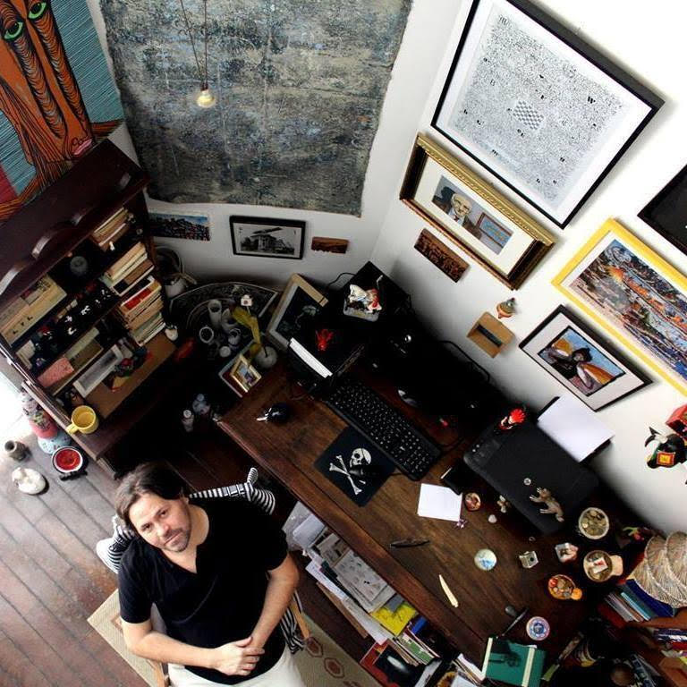

Garanta o seu lugar na Toca.
Manoel de Barros foi quem nos ensinou. Exemplo apreendido por
ele em conversa com o amigo Millôr Fernandes: “todo escritor
tem de ter uma toca”. O lugar que o escritor escolhe e destina para
ficar lá, mexendo nas palavras, construindo o repertório,
conversando com os personagens, rabiscando prosas e versos,
descobrindo os caminhos da escrita. “Todo mendigo faz o
mesmo”, costumava dizer o poeta mato-grossense. Pois bem, é
esta a filosofia da Oficina Toca, coordenada por Marcelino Freire:
cada um começar a encontrar este “canto/casulo”. De pensamento
e de experimentação. E, a partir daí, “tocar” em frente, dentro de
sua aspiração literária, o que quiser “tocar”.
Sobre Marcelino Freire

Há muitos anos coordenando oficinas de criação literária, o
escritor Marcelino Freire é um provocador. E, com suas
provocações, tem ajudado a tirar da “gaveta”, por todo o país,
muitos projetos de livros, nos gêneros mais diversos. Autor de
obras como “Contos Negreiros” (Prêmio Jabuti 2006) e o
romance “Nossos Ossos” (Prêmio Machado de Assis 2014),
ambos publicados pela Editora Record, Freire compartilha com os
participantes de suas oficinas – seus “parceiros de escrita” –
aquilo que a prática, para ele, tem ensinado: “livro bom é livro em
movimento”. Tocar em frente é o segredo, afirma. Citando a
escritora Clarice Lispector, “escrever se aprende escrevendo”.